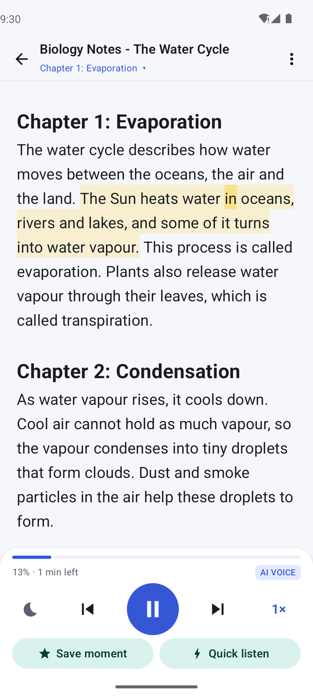
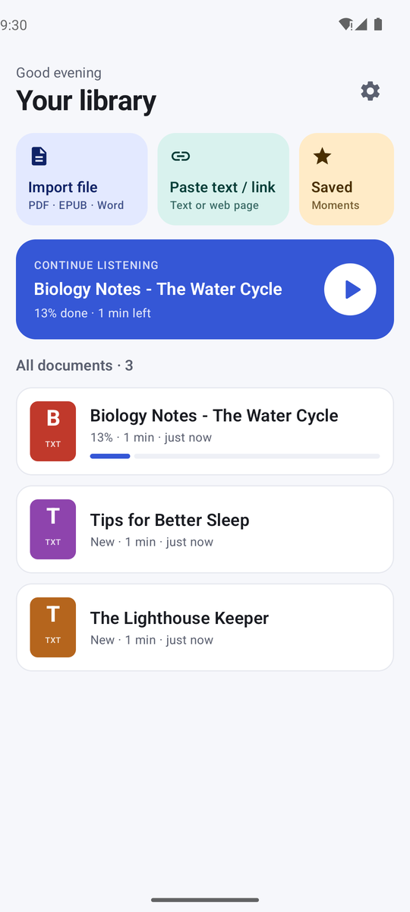
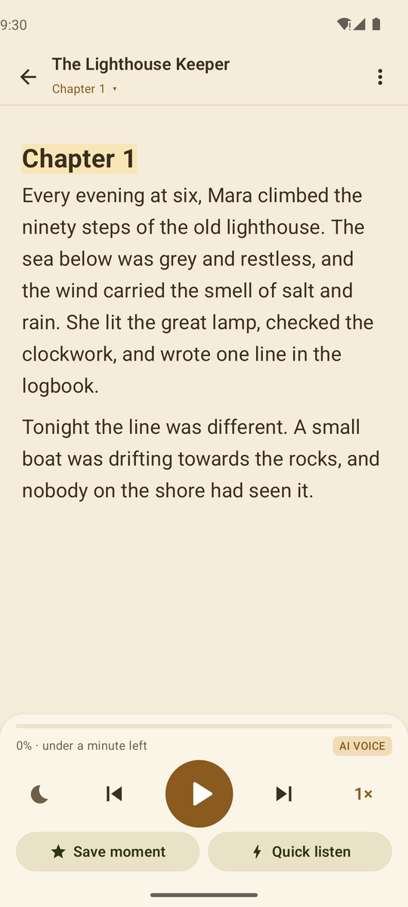
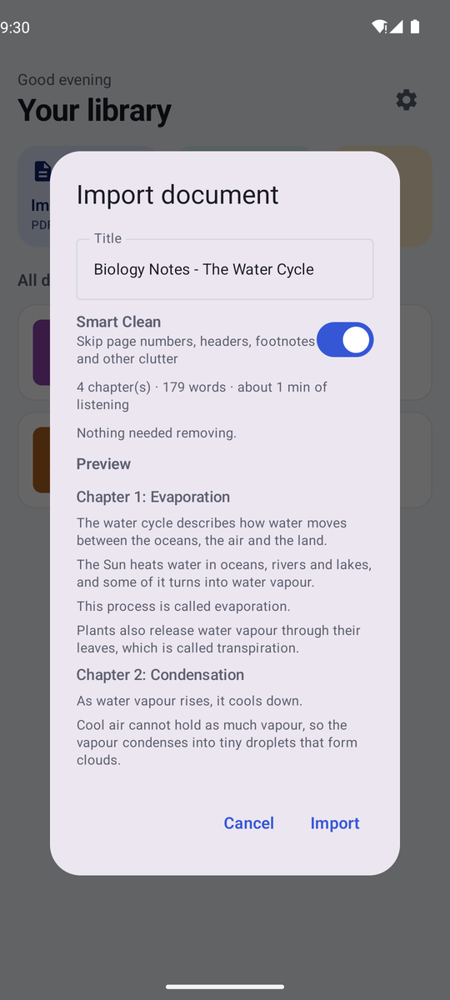
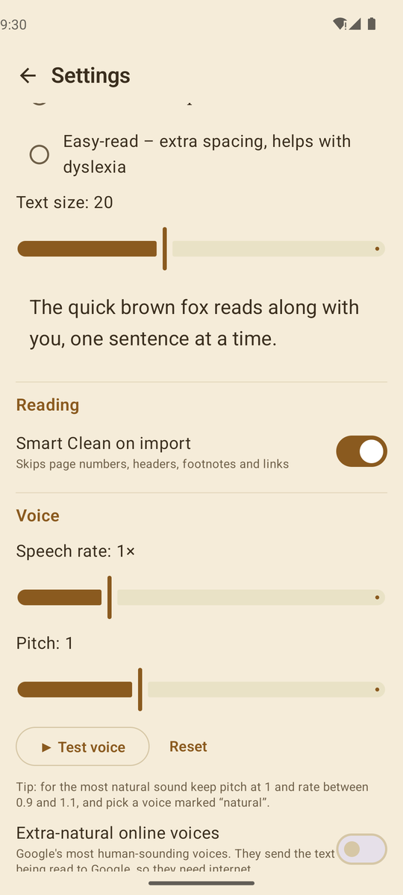

Lazy Reader reads your PDFs, eBooks, study notes and web articles aloud, and highlights every word as it goes.
Free for Android 8 and newer · No account · No ads · Optional Pro €4.99, once

PDF, EPUB, Word (DOCX), text and saved web pages. Chapters are found automatically so you can jump around.
The sentence being read is highlighted and each spoken word lights up, so your eyes and ears stay together.
Share a page from Chrome, or copy a link and tap "Read what you copied". Menus and adverts are left out. 3 free articles, unlimited with Pro.
Hear 5 key points any time, or a 1, 5 or 10-minute version of a chapter (3 free, unlimited with Pro), built from the most important original sentences.
Open a book after a break and hear a short reminder of what you covered last time, then carry on.
Long-press a sentence to keep it, add your own note, and share all your saved quotes at once.
Controls on your lock screen, notification and headphones. Pauses when you unplug headphones.
Stop after 10 to 60 minutes, or at the end of the chapter, for reading in bed.
Light, Dark and Sepia themes, adjustable text size, and an Easy-read font with extra spacing that helps with dyslexia.
Everything you need to listen is free. Try each Pro feature for free first, then unlock it for life with one payment of €4.99 on Android.
Pro is a one-time purchase through Google Play, restored automatically on any Android phone signed in to the same Google account. It is not a subscription. The web version is free and does not include photo, translation or web links.
Page numbers, running headers, footnote marks and web links make most text-to-speech apps sound robotic. Lazy Reader removes them before reading, and shows you exactly what it skipped.




Import a file, paste text, or share a page from any app to Lazy Reader.
See the chapters, the listening time and what Smart Clean removed. Tap Import.
Listen at your own speed. Lazy Reader remembers where you stopped.
Lazy Reader has no account and no server. It uses your phone's own voices, so it works on a plane, on the underground or anywhere without signal.
The internet is used when you open a web link, choose Google's online voices, buy Pro, or download a translation language pack. Pro photo and translation run on your phone with Google ML Kit: photos and text are not uploaded, but ML Kit sends Google anonymous diagnostics when you use them.
Yes. Reading files and text aloud, Smart Clean, key points, saved moments and all themes are free and unlimited, with no adverts. You can also try 3 summaries, 3 web articles, 3 photos and 1 translation for free. Lazy Reader Pro is an optional one-time purchase of €4.99 that removes those limits.
No. You pay once through Google Play and keep Pro for life. It is restored automatically when you reinstall or move to a new phone with the same Google account.
It uses the text-to-speech voices already on your phone. For the best sound, install or update "Speech Services by Google" from Google Play and choose a voice in Lazy Reader's settings. You can change the speed and pitch there too.
No. Files and pasted text are read completely offline. The internet is only needed to open a web link, or if you switch on online voices.
Yes. Your first 3 photos are free, then it is part of Pro. Take a photo or pick one from your gallery and the text is recognised on your phone. Printed text in Latin-alphabet languages works best. Scanned PDF files are not supported yet; take a screenshot of the page and use Photo to speech instead.
No. It downloads only public pages, without your cookies or passwords. For other pages, select the text in your browser and share it to Lazy Reader instead.
Yes: the free web version runs in Safari, Chrome and Edge and can be added to your home screen. It reads files and pasted text aloud with highlighting, summaries and saved moments. Photo to speech, translation and web links are Android-only for now.
Android phones and tablets running Android 8.0 or newer. It is light enough for phones with 4 GB of memory.
Quick listen picks the most important original sentences on your phone. It does not rewrite your text or send it anywhere.
Translation is done on your phone by Google ML Kit. It is good for getting the meaning, but it is a machine translation and can contain mistakes, so do not rely on it for important decisions.